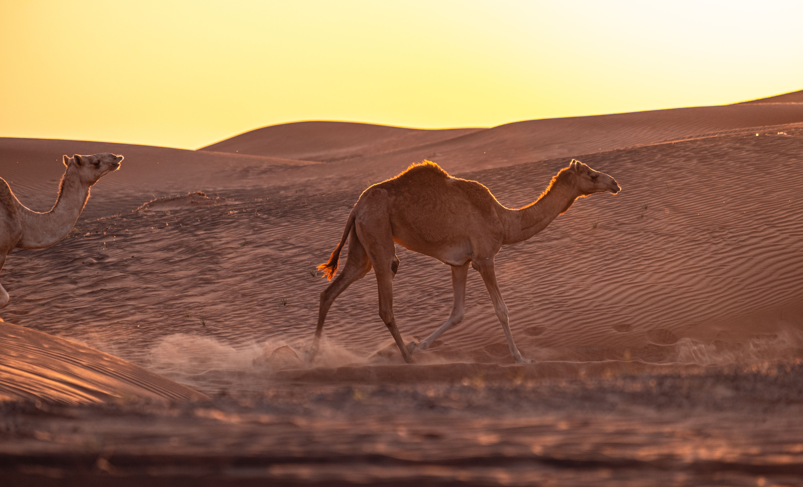
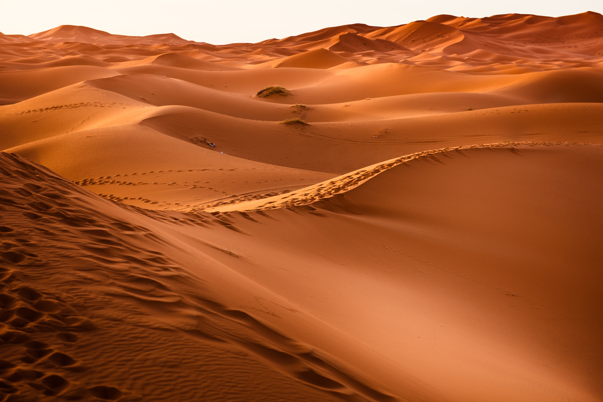

Extreme Realms of Resilience
Arid deserts cover roughly one-third of Earth's land surface, characterized by extreme aridity, scorching daytime temperatures, and freezing nights due to rapid heat loss. Despite receiving minimal annual precipitation, these dynamic landscapes are far from lifeless.
Flora like cacti and succulents have evolved specialized water-storing tissues, while nocturnal fauna avoid the blistering sun entirely, turning the desert into a vibrant ecosystem under the cover of night.
Masterclasses in Physiological Adaptation
For students exploring evolutionary biology, deserts provide incredible examples of physiological specialization. Animals such as desert rodents can survive their entire lives without drinking a single drop of liquid, metabolizing water directly from dry seeds.
Understanding these extreme adaptations offers invaluable insight into how life perseveres under severe climate pressures and water scarcity.

Key Environmental Metrics
Essential scientific data points defining the arid desert biome.
~33%
Of Earth's total land area
< 250mm
Extremely scarce precipitation
50°C+
Peak daytime heat extremes